Excited, hot, energetic, cheerful. It has the longest wave, stimulates the brain, promotes muscle tension, increases blood pressure and rhythm of breathing. Activates the hormonal system, improves efficiency, creates a sense of bodily heat.
ORANGE
Bright, brings joy, improves mood. Charging with energy, helping to fight stress. It also helps improve digestion and accelerates blood flow.
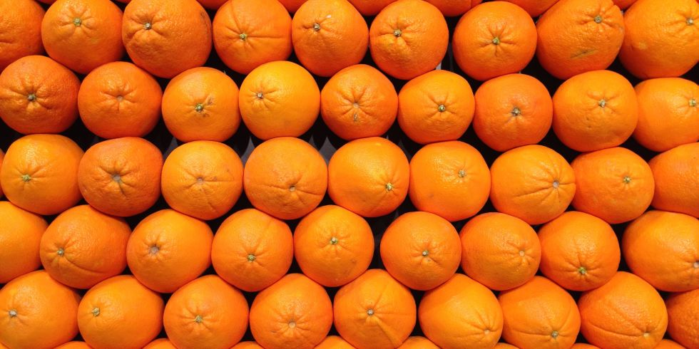YELLOW
Stimulates vision, brain work, has a positive effect on motor activity. Stimulates imagination. The color of good mood helps to fight apathy and anxiety.
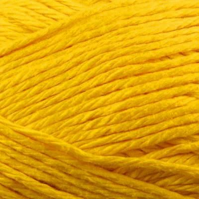GREEN
Green - the color of nature the most widely used in the design of interiors. This is due to its calming effect and pleasant appearance. It also relieves stress and attracts attention. Many schools choose chalk boards of this color exactly for this reason. Buyers often spend more time in stores with lots of green color in the decor.
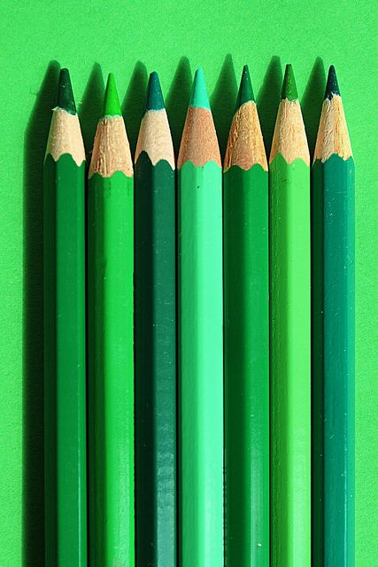LIGHT BLUE
Light, fresh, heavenly. Removes excessive anxiety and anger. The color of the clear mind promotes the development of creative abilities, the improvement of concentration ability.

BLUE
Cold, calm, noble color. Soothes, relieves aggression. Stimulates mental ability, improves memory.
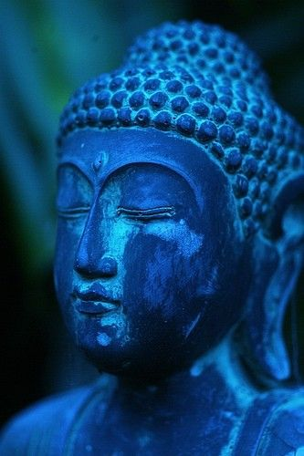VIOLET
Since ancient times, this color is associated with royal luxury and refinement. The purple color adds to anyone wearing such a shade, a visual effect of wealth and elegance. It causes deep thoughts and promotes high spirituality. Purple color also has the ability to activate and improve sexuality, and this fact makes it an ideal choice for the color of the matrimonial bed.
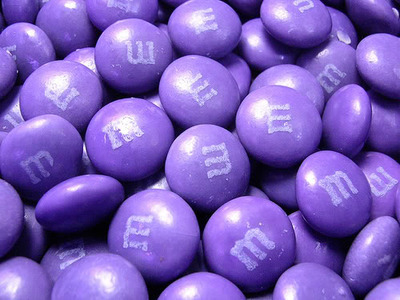BROWN
Warm, harmonious; Creates a calm mood, expresses the stability and durability of objects.
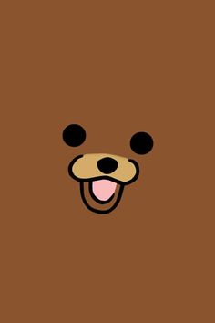GRAY
Cold, calm, detached. When a person looks at him for a long time, she becomes drowsy and sad
BLACK
Strict, assembled, elegant. As well as blue, it helps to tune in to intellectual work. Usually, in a small amount used for contrast.
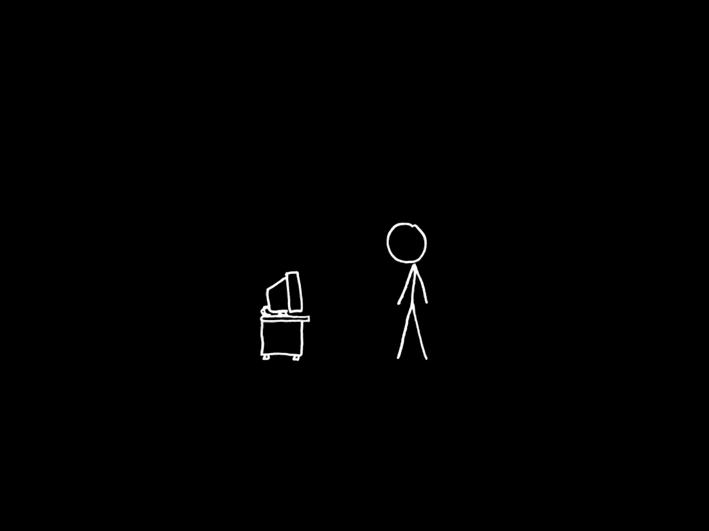White
Lightweight, free. Symbol of purity and equilibrium. Good combination with other colors. It is considered to be the color of harmony, since it simultaneously transmits both the glow of rays and the cold of the ice. Doctors and nurses wear white dressing gowns, because the white color provides a sense of purity and perfection. This color also has an additional calming effect and visually makes the space brighter.
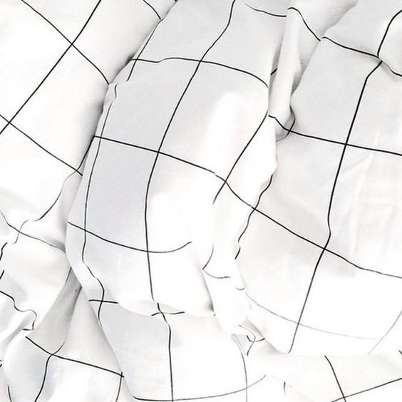INTERESTING FACTS
1. The world's most popular color is blue. About 40% of people call their favorite color is blue. The second place is purple color, which gained 14%.
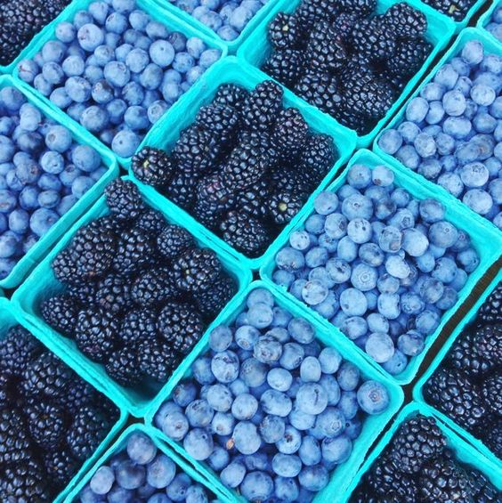2.It appears that the bad blood between bulls and the color red is a total myth. It is not the color of the muleta that makes the bull go charging but the movement of it. In fact, bulls don’t seem to have any color preference at all. Any moving object—regardless of its color—is a likely target for them.
3. Men and women see the color red differently. While women tend to see maroon, cardinal, and crimson, men typically just see red. No varying tones, hues, or shades–just color-crayon, fire engine red.

4.Recent discovery shows that colors affect the way we taste foods. For instance, an orange or creme-colored cup definitely makes chocolate taste better than in any other cup with a different color.
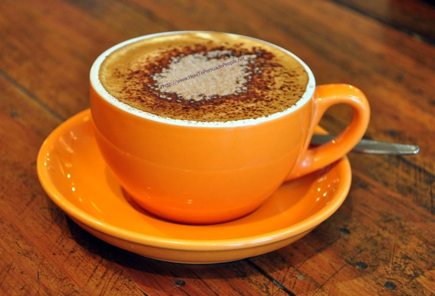5.Yellow + Red = Hunger.
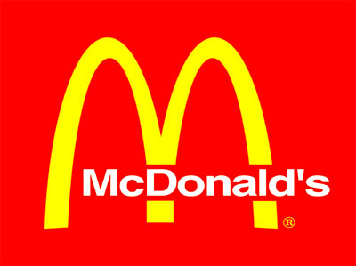1. Color blindness is more prevalent among males than females, because the most common form of color vision deficiency is encoded on the X sex chromosome.

2. If a woman is red-green color blind, all her sons will also be color blind.

3. John Dalton was also color blind.